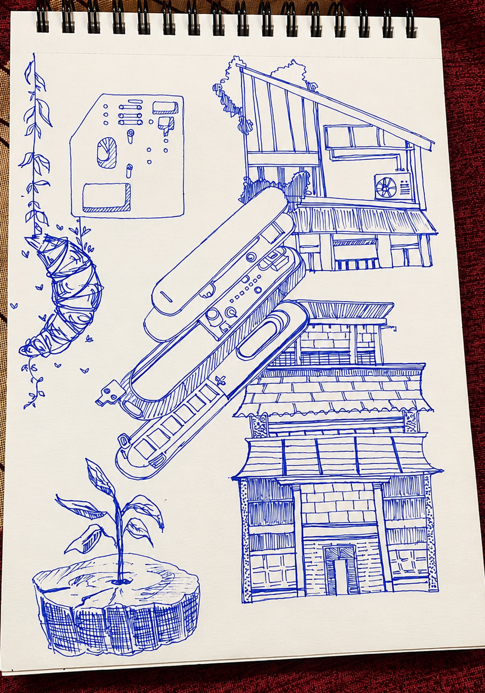
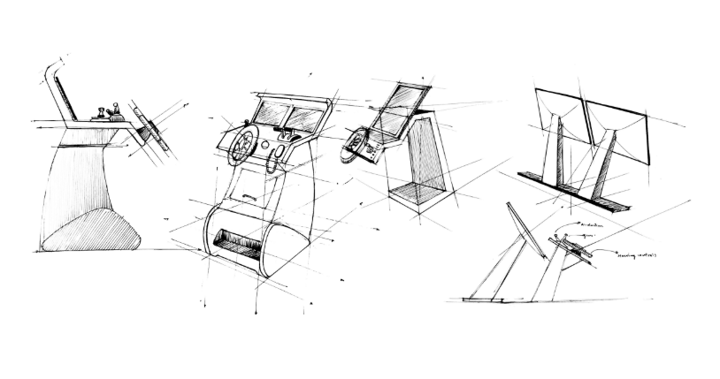
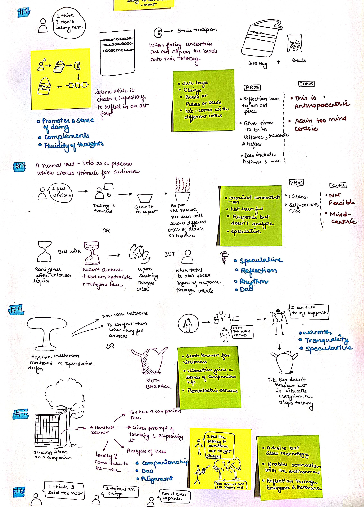
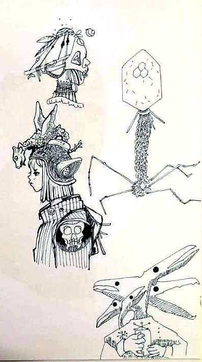
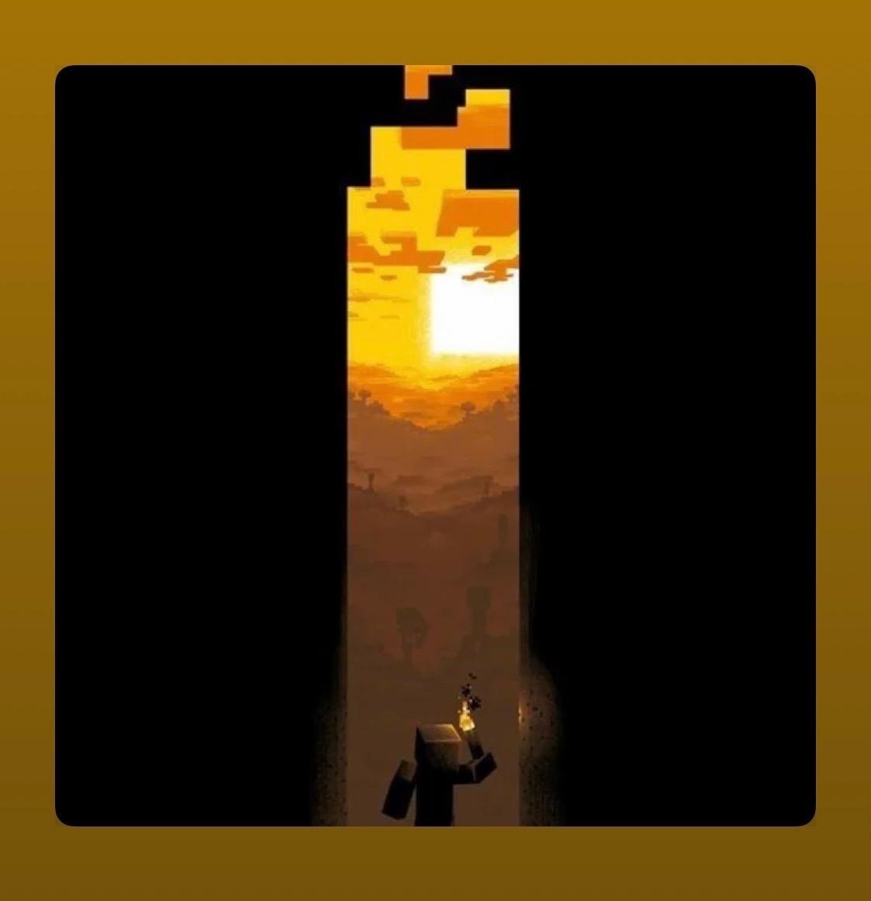
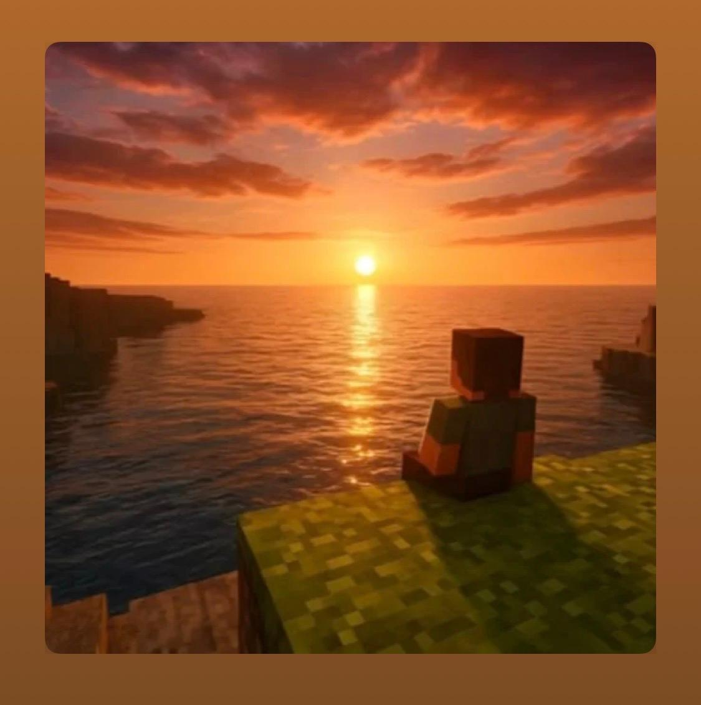

From Everyday Frictions to Care-Centered Futures
Notes from my Master’s thesis on assistive mobility, domestic accessibility, and how participatory design can surface the small barriers hidden inside everyday Indian homes.
02 / TRANSMISSIONS
- essays, notes, talks
Notes from my Master’s thesis on assistive mobility, domestic accessibility, and how participatory design can surface the small barriers hidden inside everyday Indian homes.
A reflection on soft sensing, ambient expression, and how objects might help people notice, hold, and communicate the emotional mood of a space.
Thinking about quieter workplace technologies - systems that allow people to signal how they feel without needing to explain everything out loud.
04 / VISUAL LOG
- hover any tile

Sketching to brainstorm
2024 · SKETCH LOG
Went to this cafe nearby my university and tried to capture my day.
.png)
Silouhette sketching of inland boats
2025 · RESEARCH LOG
Looked at how different types of boats act while visiting the Sasoon DOcks, Mumbai, India.
.png)
Ghibli Inspired shop
2026 · SKETCHING
Moments when I get inspired from Ghibli movies.
.png)
The Bear
2025 · SERIES
Carmen "Carmy" Berzatto from The Bear series from FX, my favourite show of all time.
.png)
Landour
2026 · LANDSCAPE
View from my window during a hoiday in the winters.
.png)
Silouhette sketching of inland boats
2025 · RESEARCH LOG
I found different types of boats not only in real but through a book collection that one of the skipper had.
.png)
Silouhette sketching of inland boats
2025 · RESEARCH LOG
Some futuristic view to the boats and ferries from pinterest.
.jpg)
Terracotta Bottle
2025 · CAD
Designed Terracotta bottles for a Form Design Module with the help of artisans and a ceramic expert.
.jpg)
Character sketching
2024 · SKETCHING
I like to draw my next buys. I was reading The Hitchhiker's Guide to the Galaxy by Douglas Adams when i drew the second character.
.png)
Harry Potter
2024 · SKETCHING
While watching Order of the pheonix I had this epipheny to draw a cafe that serves condements with books.
.jpg)
Dashboard Brainstorming
2025 · BRAINSTORMING
Sketching for the HFD project while at IIT Bombay.

Dashboard Brainstorming
2025 · BRAINSTORMING
Sketching for the HFD project - Helm redesign while at IIT Bombay.
.png)
Sketching
2026 · SKETCHING
Japanese houses from a series and snippets from Pinterest.

Speculative Everything
2024 · NOTES LOG
Visual note taking while reading speculative everything by Dunne and Fiona Raby.
.jpg)
Character sketching
2024 · SKETCHING
I like to draw my next buys. I was reading The Hitchhiker's Guide to the Galaxy by Douglas Adams when i drew the second character.
.jpg)
Care-centered systems
2026 · DESIGN RESEARCH
Small systems, deatils, tried to replicate from automobile dashboards while working on the HFD project.

Character sketching
2024 · SKETCHING
Made bunch of stickers for our Movie Clubin IIT Roorkee.
05 / READING-PODCAST LOG
- hover to listen
30 secs preview
30 secs preview
30 secs preview

30 secs preview

30 secs preview